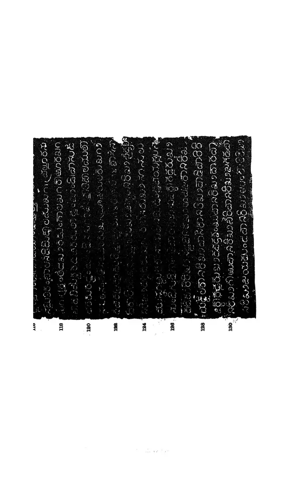

Chēbrōlu inscription of Jāya ; after Śaka-Samvat 1135
No. 17.—CHEBROLU INSCRIPTION OF JAYA;
AFTER SAKA-SAMVAT 1135.
By E. HULTZSON, Ph.D.
This inscription is engraved on the four faces of the right one among two pillars in fr of the gôpura of the Nâgêsvara temple at Chêbrôlu in the Bâpaṭla tâluka of the Kistna distr I edit it from an excellent inked estampage, prepared in 1897 by Mr. H. Krishna Sastri, B The inscription is in very good preservation. The letters are so clear and well-formed tha can be read as easily as print. The alphabet is Telugu, and the languages are Sanskrit vc (lines 1-110 and 149-158) and Telugu prose (ll. 110-149).
The inscription opens with some invocations (verses 1-4). Then follows the genealog: the (Kâkatiya) king Gaṇapati, who traced his descent from the Sun (v. 5), his son Manu (v and the family of the Raghus (v. 7 f.). The earliest historical ancestor, mentioned by us is Durjaya (v. 8). His son Bêta (v. 8) is identical with Betma, alias Tribhuvanamalla, of Êkâmranâtha and Anmakoṇda inscriptions.5 After him ruled Frôla and his son Rudra (v Mahâdêva, the uterine brother of the last (v. 9), and Mahâdêva's son Gaṇapati (v. 10),
1 Minor differences which may be mentioned are: In line 1 we here have the spelling Hârtîi. (inste Hârtîi), and in line 13 Kollabiganda (instead of Kollaâhiganda); in line 12 we have only Vikramd (instead of yuvardja-Vikramâditya), and in lines 14 and 15 Tâl-âdhipati and Tâl-âdhipa (instead of T and Tâlapa-râja); moreover, in line 6 the length of Jaysiñdha's reign is (correctly) given as thirty-three (ir of thirty) years.—Verses 2-4 of our inscription occur, in addition to others, in the inscription mentioned a verse 2 is also found in 2zuth-Ind. Inser. Vol. I. p. 48, l. 20; and verse 8 ibid. l. 22, and in Ind. Ant. Vol p 92, l. 23.
2 I.e. Ammarâja.
3 The writer perhaps meant to say only 'the Mahârâjâdhirâja.'
4 I.e. 'the great Indra (or chief) of kings.'
5 Ind. Ant. Vol. XXI. p. 197.
was surnamed Chhalamattiganḍa1 (vv. 18 and 19). This genealogy agrees with that derived from other Kâkatiya inscriptions,2 but acquaints us with the name of Bêta's father, which was hitherto unknown.
Verses 13-27 refer to Jâya (v. 20) or Jâyana (v. 13), a chief whose genealogy is given in detail in the Ganapêsvaram inscription of Śaka-Samvat 1153.3 He was the chief of the elephant-troop4 of king Gaṇapati (v. 13) and received from his sovereign, in Śaka-Samvat 1135, the city of Shaṇmukha (v. 20), or Tâmrapuri (v. 19), or Tâmranagari (v. 27). The two last names are Sanskrit equivalents of the Telugu word Chembrôlu (l. 120), the modern Chêbrôlu. The same town is designated 'the city of Shaṇmukha' on account of its temple of Kumârasvâmin (v. 22 and l. 114), which is now called Nâgêsvara. Jâya is stated to have built a wall round Chêbrôlu (v. 27) and to have repaired its temples (vv. 21-26).
The Telugu portion consists of a list of the villages and shares which were the property of the temples at Chêbrôlu, and of the persons who had granted lamps to these temples. This list was evidently compiled from the records of the temples at the order of Jâya, after he had received Chêbrôlu in gift from king Gaṇapati. The majority of the villages and shares apparently belonged to the temple of Kumârasvâmin (ll. 110 and 114). The temples of Chôqabhimêsvara and Vâsudêva (l. 119 f.) cannot now be identified at Chêbrôlu. The temple of Ananta-Jina (l. 121) may have been located on the site of a Śiva temple, in the court-yard of which Mr. Krishna Sastri found three beautifully carved Jaina figures. Two further temples at Chêbrôlu, Mûlasthâna5 and Kâduviptêsvara, are mentioned in verse 26.
Of the villages which are referred to in the Telugu portion I can identify only three, vta. Kollûru (l. 114 f.) in the Rêpalle tâluka,6 Kolankalûru (l. 116), now Kolakalûru,6 in the samo tâluka; and Vallûru (l. 117), 9 miles south-west of Chêbrôlu in the Bâpaṭla tâluka.
As stated before, king Gaṇapati granted Chêbrôlu to Jâya in the month of Chaitra of Śaka-Samvat 1135, the cyclic year Śrîmukha (v. 20), i.e. A.D. 1213-14. This is the earliest authenticated date of Gaṇapati's reign. The inscription itself may have been incised some years later; for Jâya must have required several years for accomplishing the buildings which are referred to in the inscription.
TEXT.7
East Face.
- 1 स्वस्ति श्रीः । जयति हरिवराहः प्रेमसं-
- 2 भ्रांतपृथ्वीस्तनभरपरिरंभारंभ-
- 3 दृप्तस्य यस्य । पुञ्जकचुञ्जितांभ-
- 4 स्वंचयस्तोयराशिः पुनरविरञ्जनि-
- 5 यैत्स्वेदपूरैरपूरि ॥ [१*] हेरंबस्य
- 6 विकल्पदंतमुकुञ्जं गौरीरहस्यो-
- 7 क्षवप्रत्यासंनविनासदीपकलिका
1 This biruda is elsewhere spelt Chalamartigaṇda. It was borne by Rudrâmbâ and Prâtâparudra (Ind. Ant. Vol. XXI. p. 199), and by the chief Vanapati (above, Vol. IV. p. 315).
2 See above, Vol. III. p. 95.
3 Above, Vol. III. No. 15.
4 Compare verse 38 of the Ganapêsvaram inscription.
5 A Chêbrôlu inscription (No. 161 of 1897) of Gonka of Velanâṇḍu, dated in Śaka-Samvat 998, the Nala-samvatara, records the gift of three lamps to the temples of Mûlasthâna-Mahâdêva and Kumârasvâmin.
6 See Mr. Sewell's Lists of Antiquities, Vol. I. p. 79.
7 From an inked estampage, prepared by Mr. H. Krishna Sastri, B.A.
8 गंगामृणाढ्यंकुरः । देवस्य क्षिपुर-
9 दृष्ट्वो विजयिना पुष्पेषुणा मस्त-
10 वे विन्यस्तांकुशविभ्रमा विजयते
11 चूडासुधांशोः कला ॥ [२*] पायाद्वः प-
12 रिवर्तमानलहरीप्राग्भारमास्फा-
13 लयन्सायंकालतरंगकेक्षिषु कारास्कं1
14 देन मंदाकिनीं । देवस्यारभटीपरिभ्र-
15 मकलासंरंभसंभाविनः शंभीरंबु-
16 मृदंगेवाद्यरचनारंभाय लंबोदरः ॥ [३*]
17 हंसाः पद्मासनारुढा यदंतस्समु-
18 पासते । परामृतरसस्थंदि स्रोतस्सारस्व-
19 तं स्तुमः ॥ [४*] प्राचीवधूमुखविशेषकपद्म-
20 रागः प्रख्यायते हि भगवानरविंदवं-
21 धुः [1] यत्र श्रुतिप्रणयधामेनि संनिध-
22 क्ते देवो हिरस्मयवपुः पुरुषः पुरा-
23 णः ॥ [५*] मनुरंशमतोस्य स्तुरासीद्यत
24 एवाभ्युदितास्वभावशुद्धाः । निगमादि-
25 व सर्वधर्म्मचर्य्याम्तुहिनाद्रेरिव राज-
26 हंसवंशाः ॥ [६*] तस्मादिक्ष्वाकुरासीत्तदुपरि अ-
27 गरस्तत्परस्तात्ककुस्यस्तस्मादूर्ध्वं2 दिलीपस्तमनु-
28 दशरथस्तत्पुतो रामचंद्रः । यद्दीरशीवि-
29 लासा विससमतुलितोदग्रकैलासजाग्रहोः-
30 क्रीडातुंगलंकासुभटविघटनास्ते दिगं-
31 ते प्रथंते ॥ [७*] एषां वंशे रघूणां क्षितिपति-
32 रभवदुर्जयश्शीर्यकेक्षिष्फूर्जङ्गमा त-
33 तोभूतिकरटिघटाशातनीं वेतराजः ।
34 [च]क्रे विक्रांतबाहुस्तदनु वसुमतीपा-
35 लनं प्रोलभूपस्तत्पुत्रो बद्रदेवस्तदु-
36 परि च नृपोत्तंसरत्नं बभूव ॥ [८*] ततस्तत्त्वोदर्थ्य[:*]
37 स्वभुजधृतसाम्राज्यमहिमा महादेव-
38 क्षोणीरमण इति गीतस्त्रिभुवने । अभूत्वे-
1 The anuvedra stands at the beginning of the next line.
2 Rend °रक्कुरस्य°.
39 वानम्रचितिपतिश्रिरीमंडनमणिप्रभा-
40 भिर्यत्यादांबुरुहमकारंदव्यतिकारः ॥ [२*]
North Face.
41 अथ गणपतिदेवः प्रादुरासीदमुष्मा-
42 क्षुरतरुरिव सिंधोग्रज्ञाध्यविश्राणनश्रीः ।
43 विहरति फणिमर्त्तुः श्वासखेदादपेता सु-
44 रभिमलयजाद्वै यज्जुजे भूतधात्री ॥ [१०*]
45 यस्य प्रस्थानभेरीमुखरितहिमवज्ञ-
46 ह्वरं सैन्यघोषं श्रुत्वा प्रत्यत्यिकांताः प्र-
47 शिथिलकवरीभारबंडास्समंतात् । भं-
48 भाषातावधूतध्वनितजलधरव्यूह-
49 संक्षोभरिंखद्विग्र्घांताघातभोतप्रसृमर-
50 चमरीविभ्रमा विभ्रमंति ॥ [११*] मा त्वं म-
51 हैय मद्रनाथ पुरतः पांचाल मुं-
52 चांतरं मार्गं देहि विदेहभूप पदवी
53 हस्मीर किं वार्य्यते । ह्रण क्षीणगतिं ज-
54 हीहि गमने काशींद्र का सांद्रता यस्य
55 हारि विजृंभते चिरमिति क्ष्मापालकोलाह-
56 लः ॥ [१२*] वर्द्धते खलु वसुंधरापतेस्तस्य सिंधु-
57 रचमृघुरंधरः । जायनस्सकलनाढ्य-
58 वैदिकयामणीः कविसभाशिखामणिः ॥ [१३*] य-
59 ल्कीर्त्तिगीतिचतुरास्त्रिदर्शेद्रकन्याग्र्यङ्घांतसौ-
60 धशिखरेषु पुलीमजायाः । तामिस्रपक्ष-
61 रजनोष्वपि चंद्रिकाभिः क्रीडाचकोरमिथु-
62 नानि विलोभयंते ॥ [१४*] यत्त्यागाङ्गुतनिर्जितै-
63 रिव पयस्सर्व्वेखमुम्मुच्य तैर्येत्र क्वापि प-
64 लायितेपि शरदारंभे महांभोधरैः । य-
65 लेनाकारिमस्रगस्रफलकश्रेणीषु लब्धास्स-
66 दा वृष्टिर्यत्पूतिपक्षपक्षम्बदृशां नेत्रा-
67 रविंदेषु च ॥ [१५*] एतैः पुरा नः क्षितिपालपु-
68 त्रासंरक्षितास्संयति दंतदष्टैः । इती-
69 व यद्वैरिविलासहर्म्यैसृणप्ररोहाश्रिशर-
70 सा द्वियंते ॥ [१६*] सुतत्र वदनकांतिं वासस-
71 : पञ्जवेन स्थगय सलिलपूरैर्दुर्गमं
72 वर्त्तमा भूत् । इति गिरिमधिगच्छन्यस्य श-
73 त्रुचितोशः कथयति निजकांतां चंद्र-
74 कांतस्थलोषु ॥ [१७*] मंत्री कार्यनिरूपणे
75 प्रियसुहृदिसंचसंभाषणे1 काव्यारं2
76 भविधौ कविः सद्दचरस्संगीतसंपा[द]-
77 ने । कर्त्तां शिल्पकलाकलापविषये सप्रेष-
78 णे किंकरी युधे यम्बलमत्तिगंडन-
79 पतेरग्रेसरी वर्त्तते ॥ [१८*]. अर्थकदा दक्षिणदि-
80 [क्*][चि]तोशान् विजित्य वीरी विनिवर्तमानः । म-
81 [ध्ये]पथं ताम्रपुरीमयासीक्षंच-
82 त्पताकां ब्लमत्तिगंडः ॥ [१९*] पंचक्षिंशदु-
83 पेतरुद्रशतसंख्याते शकाब्दे मधौ मा-
84 सि श्रीमुखवत्सरे स नृपतिरशीजायसेना-
85 भृते [] पूर्वं तावकमाढमातुलभुजा-
West Face.
86 संरक्षितां षाण्मुखीमद्यारभ्य मदान्नय[त].
87 पुरमिमां लं पालयस्त्रेत्यदात् ॥ [२०*] षय स
88 सकलप्रासादानां १प्रणष्टशिलेष्टकाप्रभृति
89 सकलद्रव्यं नव्यं विधाय समंततः । य-
90 श इव सुधालिपं तत्र प्रकाश्य ततः परं क-
91 नककलश्यूहं खस्य प्रतापमिव न्यधात् ॥ [२१*]
92 स खलु सकळांगमाजं कनकमयीमल-
93 त तारकाराविः । प्रतिक्कतिमसुररणांगण-
94 विहरणयोग्यं तत्त्रमिव ॥ [२२*] सर्वोपचा-
95 रसिश्चर्यमस्य4 पात्रपरिच्छदं । सौवर्णं५ राज-
96 तं तांमं कांसं च बहुधा व्यधात् ॥ [२३*] म-
97 ह्याय लोहप्रतिमां महीयसीं स तस्य
98 देव्यौ च विधाय तादृशौ । प्राकारमुच्चं शनि-
1 Read १द्विश्वध.
2 Read प्रनष्ट.
3 The anusvedra stands at the beginning of the next line.
4 Read सिद्धार्थ०.
5 Read सौवर्णं.
Plate 1 is bound after this page.
99 संटपं महत्त्रिभूमिकं गोपुरमप्यक-
100 ल्ययत् ॥ [२४*] अधैतस्याकार्षीत् प्रतिमकरसंक्रां-1
101 तिदिवसं महाखेटक्रीडाग्रम[वि]धुतये सं-1
102 टपमसौ । यदालिख्ये लेखैरवसरसमेतैस्त-
103 पुद्गकं विभाव्यते देवासुर[सम]रसंर-1
104 भरचनाः ॥ [२५*] मूलस्थानस्य लिंगस्य काडुवि-
105 द्देश्वरस्य च । नवप्रतिष्ठामकरीदस्यु-
106 भिः परिभूतयोः ॥ [२६*] दुर्गी च तांम्रनगरी-
107 मभितो व्यधत्त प्राकारसुंनतमुदं-
108 चितगोपुरं सः । आभाति येन हरस्-
109 तुविनिर्जितेन क्रौचेन सा शिखरिणा परिसेवि-
110 तेव ॥ [२७*] ई देवर जड्लु । तूप्पुं मीदलुकीनि ५-
111 दक्षिणमुगात् । नारिकेडपुंबूंडि । मंचे-
112 ड्लु । कोविलंबूंडि । कोमरजंबूंडि । वंजेड्लु ।
113 उमोतलपूंडि । सुद्वपूंडि । सेरपूंडि । मुलु-
114 कलपूंडि अंदु स्वामिदेवरकु सगमु । कोलू-
115 रि अनंतेश्वरदेवरकु सगमु । गुम्रपूंडि । व-
116 छुंबूंडि । गूडपूंडि । व्रित्तुलु [*] कोलंकलूर-
117 नमिलिकंभाल नडिमि पोलमु ख १५ वल्लूरनु-
118 ख १५ क्रंतेट ख २ कडुंगाल ख १ कोऽऽर ख १ [*]
119 चोडभीमेश्वरदेवरकु ताडुंबूंडि । वासुदे-
120 वरकु कद्दैपूंडिनि ख १[२] चैन्नोलि पोलमुखो-
121 ननु अनंतजिनदेवरकु ख ५ पूजारुलकु ख १२-
122 देवर ब्रह्मपुरि ब्राह्मलु १४कू ख १४ शासना-
123 धिकारिकविचक्रवर्तुलकु ख २ जोस्युनिकि ख २ वै[द्यु]-
124 निकि ख २ पेम्गडकु ख २ करणानकु ख २ सानुलु-
125 सुब्रूऽऽवुरलीनानु एनिमिदेंडु वयस्मु[न]-
126 नुडि गुडिगीलिंचिवारिकेल्लानु श्रीक्रीकड्डकु ख २-
127 पडिष्टारिकि ख २ नष्टवीनिकि ख २ आवजकानिकि ख २-
128 मद्देलकानिकि ख २ वासेकानिकि ख २ पाडीवारिकि-
129 श्रीक्रीकड्डकु ख २ धवद्ध्यंखुवानिकि ख २ धारवा-
130 निकि ख २ गौऽऽवानिकि ख २ भेरिवानिकि ख २ ज[ग]डवा-
131 निकि ख २ जयचंटवानिकि ख २ अलंकारिकि ख २-
1 The anusara stands at the beginning of the next line.
South Face.
132 मालकरिकि ख २ पोलिगरगवानिकि ख २ कुम्भ-
133 रिकि ख २ बहुगिकि ख २ कम्भरिकि ख २ कासेवारि-
134 कि ख [४] भडिवालुनकु ख २ दिब्बेटिनिकि ख २ अ-
135 खिबोयकु ख २ इंतवटुवारु तम तम
136 पतुलु नडपि ब्रितुलु गुडिचि शुखमुंडु-
137 वारु । अथ्यवारु मुन्नूँवुरुनु तम-
138 दुव पोलमुनकु देवरकु श्रीक पालु कोरु वे-
139 दि तारु मूंडु वाड्लु गुडुचुवारु ॥
140 अखंडदीपालु [1*] सूरसानि कीड्कु जक्किनायु-
141 नि पेरिनायुनि दिब्बे १ [1*] नडपिवांडु नावे । नूं-
142 कंनबोयिनि ब्रम्भे १ । ब्रम्भनबोयुंडु १ । का-
143 लेबोयुंडु १ । एख्खेबोयुंडु १ । सूरेबो-
144 युंडु १ । मख्खेबोयिनि कामे १ । गुंडेबो-
145 युंडु १ । दामनबोयुंडु १ । नागमपोते
146 १ । नख्खेबोयुंडु १ । अन्नेबोयिनि कोम्भे १ । काप-
147 स कोम्भे १ । बडंकिपोते १ । पडुमपोते १ । नख्खंगी-
148 म्मनबोयुंडु १ । नख्खेबोयिनि ब्रम्भे १ । तिरु[वे १] [1*]
149 रेकंमारे १ । शामद्दे १ ॥ * ॥ गामेकां रब्रिका-
150 मेकां भूमेरप्येकमंगुलं । हरन्नरकमा-
151 भ्रीति थावदाभूतसंभ्रवं ॥ [२८*] खदत्तां पर-
152 दत्तां घा यत्नाद्रक्ष युधिष्ठिर१ । महीम्माहीभ्-
153 तां श्रेष्ठ दानाच्छेयीतुपालनं ॥ [२९*] खसुक्तपरि-
154 पालनात्प्रभूणां परक्ततपालनमेव धर्महे-
155 तु[:] । हरिरपि कमलासनस्य मृष्टिं सततमवन्२ ज-
156 गतामभूदुपासः ॥ [३०*] इदं रक्षितां राम्ना३
157 यशश्वंद्रिकया सह । चिरं जायचमूपस्य
158 धर्मचंद्रः प्रवर्ध्वते४ ॥ [३१*] * ॥ शी शी शी ॥ * ॥
ABSTRACT OF CONTENTS.
A.— Sanskrit Portion.
The inscription opens with invocations, addressed to the boar-incarnation of Vishpr (verse 1); to the crescent of the moon on the head of Śiva (v. 2); to Ganapati (v. 3); and to Sarasvati (v. 4). Verse 5 praises the Sun. His son was Manu (v. 6). His son wa
1 The syllable ष्ठ is entered below the line.
2 The anuradra stands at the beginning of the next line.
3 Read °मवच्च°.
4 Read प्रपर्वते.
Ikshváku, who was followed by Sagara, Kakutstha, Dilipa, Dasaratha, and Rāmachandra (v. 7). In the family of these Raghus was born Durjaya, and from him Bēta; after him ruled Prōla, whose son was Rudra (v. 8). He was succeeded by his uterine brother Mahādēva (v. 9). His son was Ganapati (v. 10). The Madra king, the Pāñchála, the Vidét.a king, the Hammira, the Hūṇa, and the king of Kāśi are stated to have been waiting at his door (v. 12).
(V. 13.) "Verily, prosperous is Jāyana, the chief of the elephant-troop of that lord of the earth (viz. Ganapati), the leader of all actors and Vēdic scholars, (and) the crest-jewel of the assembly of poets."
He was the favourite servant of king Chhalamattigaṇḍa (viz. Ganapati) (v. 18).
(V. 19.) "Now once, returning from the conquest of the kings of the Southern region, the heroic Chhalamattigaṇḍa came on the way to Tāmrapuri, (a city) with fluttering banners."
(V. 20.) "In the Śaka year eleven hundred1 and thirty-five, in the month Madhu (i.e. Chaitra), in the (cyclic) year Śrimukha, that king gave (Tāmrapuri) to the glorious general Jāya, saying: 'By my order rule thou from to-day this city of Shaṇmukha (Kumārasvāmin), which has been protected before by the arm of the maternal uncie of thy mother.2'"
He (viz. Jāya) repaired and whitewashed all the temples (prāsáda) in that city and placed golden pinnacles (kalaṣa) on them (v. 21). He covered with gold the image of Tārakārāti (Kumārasvāmin) (v. 22) and supplied vessels of gold, silver, copper and brass for the worship of this god (v. 23). He gave another image of the same god and images of his two consorts,3 which were made of base metal (lōha) and were meant to be carried about in procession at festivals (maha), and built an enclosure, a maṇḍapa of Śani (Saturn), and a gōpura of three storeys (v. 24).
(V. 25.) "Then he made for this (god) a maṇḍapa for resting after the sport of the 'great hunt'4 on the day of every Makara-Saṅkrānti. On the painting in this (maṇḍapa), the gods, assembled for the occasion, regard with a thril! the representations of fierce battles between the gods and the demons."
(V. 26.) "He set up again the liñga of the Mūlasthāna (temple) and (the liñga called) Kāḍuviṭtēśvara, which had both been destroyed by robbers."
He surrounded Tāmranagari with a wall surmounted by towers (v. 27).
B.—Telugu Portion.
(Line 110.) "The villages of this god5 (are), from the east towards the south:—Nārikēḍapumbūṇḍi. Mañchedlu. Kōvilambūṇḍi. Komarajambūṇḍi. Veñjedlu. Ummetalapūṇḍi. Suddhapūṇḍi. Sērapūṇḍi. Mulukalapūṇḍi; of this (vallage), one half (belongs) to the god [Kumārajsvāmin, (and) one half to the god Anantēśvara at Kollūru Gummapūṇḍi. Vaḍlambūṇḍi. Gūḍapūṇḍi."
(L. 116.) "(The following are) the shares:—15 kha6 of land in the middle of the peacock7 pillars at Kolaṅkalūru; 15 kha at Vallūru; 2 kha at Krantsta; 1 kha at Kaḍungālu; 1 kha at Kōrūru."
(L. 119.) "To the god Chōḍabhimēśvara (belongs) Tāḍlambūṇḍi; (and) to Vāsudēvi: 12 kha in Kaṭṭempūṇḍi."
1 Literally, 'Rudra's hundred;' compare Ind. Ant. Vol. XXI. p. 202, note 48.
2 Or possibly, 'by the arms of thy mother and of thy maternal uncie.'
3 Viz. Vallī and Dēvasēnā; see the colophon of No. 1064 in my Second Report on Sanskrit Manuscripts p. 102.
4 See above, Vol. III. p. 73, note 8.
5 The temple of Kumārasvāmin (now Nāgēśvara) is meant
6 This is an abbreviation of khaṇḍi (or puṭṭi); see Brown's Telugu-English Dictionary, s. v. puṭṭi.
7 This bird is sacred to Kumārasvāmin.
(L. 120.) “In the land of Chembrôlu, to the god Ananta-Jina, 5 kha ; to the pájáris, 12 kha ; to the 14 Bráhmanas of the Bráhmapuri1 of the god, 14 kha ; to the superintendent of edicts and the omperor of poets, 2 kha ; to the astrologer, 2 kha ; to the doctor, 2 kha ; to the chamberlain, 2 kha ; to the accountant, 2 kha ; among the three hundred dancing-girls, to each of all those who serve in the temple from the age of eight years, 2 kha ; to the door-keeper, 2 kha ; to the dancing-master, 2 kha ; to one who beats the big drum, 2 kha ; to one who beats the small drum, 2 kha ; to the vásekódnu, 2 kha ; to each of the singers, 2 kha ; to one who blows the white conch, 2 kha ; to one who blows the trumpet, 2 kha ; to one who plays the gauru, 2 kha ; to one who beats the kettle-drum, 2 kha ; to the jagadáváđu, 2 kha ; to one who beats the gong, 2 kha ; to one who decorates (the temple), 2 kha ; to the garland-maker, 2 kha ; to the piligaragaváđu, 2 kha ; to the potter, 2 kha ; to the carpenter, 2 kha ; to the blacksmith, 2 kha ; to the masons, 4 kha ; to the washerman, 2 kha ; to the torch-bearer, 2 kha ; to Alli-Bôya, 2 kha.”
(L. 135.) “These persons shall live in peace, doing their respective work and enjoying (their) shares. And the three hundred Bráhmanas shall assign one part (of the produce) of their land to the god and enjoy (the remaining) three parts themselves.”
Lines 140-149 record the names of 20 persons who had granted lamps. Vorses 28-31 contain the usual admonitions to future kings.
POSTSCRIPT.
Another inscription of Jáya and of his sovereign Ganapati (No. 250 of 1397) is engraved on three sides of a pillar which is now built into the roof of the Lingódbhavasámin temple at Tsandavôlu, the capital of the chiefs of Velanándu.2 The second face of the pillar is turned towards the roof and is hence invisible. The first face opens with the same passage as the Chébrôlu inscription published above, and breaks off with the words विहरति फण्डिमत्तुः श्वा- of verse 10. The third face bears five Sanakrit verses, the first of which is incomplete at the beginning, and a passage in Telugu prose. I subjoin the text3 of the first sixteen lines of the third face.
- 1 भाषत जायसैन्यना[थं । कल]यसि म-
- 2 यि शंकरे च भक्तिं स[द]शमतस्लम-
- 3 मूनि पालये[ति ॥ कृ]लोत्तुंगरा-
- 4 जेंद्रगोक्षिती[शप्रतिष्ठ]ापितं शं-
- 5 करं स्वातुजाखं । [स पंडी]श्वरं जाय-
- 6 सेनाधिनाथस्वदार[भ्य] तैस्तैष्पायै-
- 7 [रु]पास्ते ॥ चौरैश्विरेण चलितेस पुरा-
- 8 ण्णपोठे पीठांतरं स चतुरं विधिव-
- 9 हिधाय । प्रासादमप्यमलकांच-
- 10 नकुंभसंपत्संभावनीयमकारो-
- 11 दनुकर्मशिल्यैः ॥ सर्व्वोपचारस्थिर्य-4
1 See above, Vol. III. p. 296, note 9, and Vol. IV. p. 128.
2 See above, Vol. IV. p. 83 f. and Additions and Corrections, p. v. The inscription itself refers to two of those chiefs ; see below, p. 151, notes 5 and 6.
3 From an inked estampage, prepared by Mr. H. Krishna Sastri, B.A.
4 Read सिद्धये०.
12 मस्य [प]ात्रपरि[च्छ]दं । सौवर्षं1 राजत2
13 ताम्रं कांस्यं [च] बहुधा व्यधात् [॥]3
14 य[स्य] यस्य यदा [भू]मिस्तस्य तस्य
15 [त*]दा पात्रं । तस्य[त्त्वण]प[ति]क्षापीयस्यै
16 [गो]वाटिकामदात् ॥ ई गोवाड पोत्र-
17 [मेर] [*]4 . . . . .
It appears from the above passage that [king Ganapati] put the general Jāya (lines 1 and 5 f.) in charge of a temple of Śārikara (Śīva), which had been founded by king Kulōttuṅga-Rājéndra-Gonka6 and had been named Papñīśvara (1. 5) after [Paṇḍa],8 the younger brother of Gonka I. Jāya provided the god with a fresh pedestal (piṭha), as the old one had been stolen, placed golden pinnacles (kumbha) on the temple, and granted vessels for the worship. King Ganapati himself (1. 15) gave to the temple the village of Gōvāṭikā on, in Teluga, Gōvāḍa! (1. 16).
1 Read सौवर्षं2.
2 The anuvāra stands at the beginning of the next line.
3 This verse is identical with verse 23 of the Chēbrōlu inscription.
4 Lines 17 to 25 contain a description of the boundaries of Gōvāḍa in the Teluga language.
6 No. 12 of the same Table.
8 For the importance of the use of the earlier and later forms of bh and b, in connection with undated records about a century or a century and a half earlier, see page 155 below, note 8.
